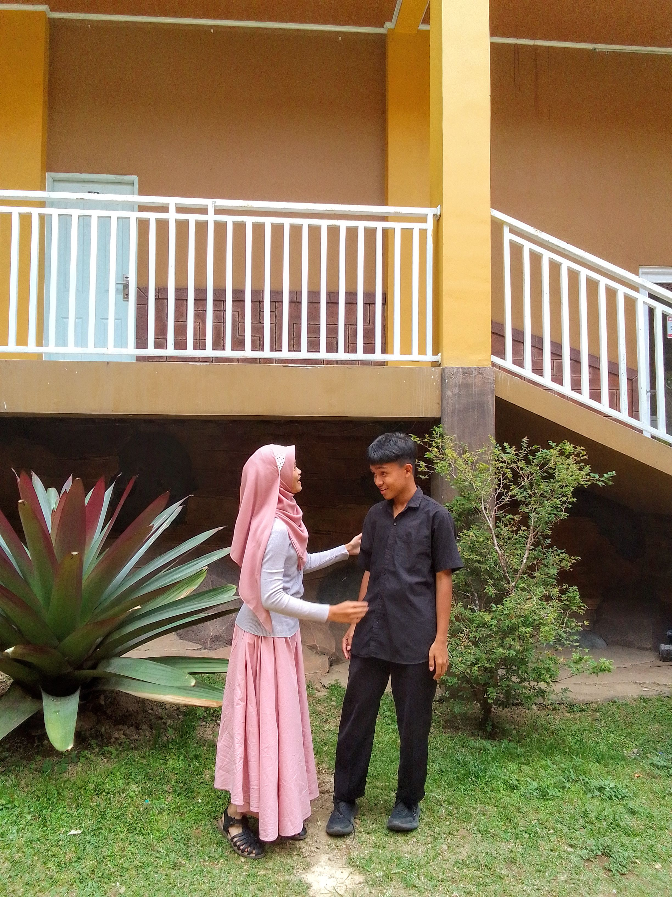

A LITTLE WEBSITE, firdyy sayangg ririnn
haii sayangg 🤍
aku punya sesuatu buat kamuu...

sayanggg ririnn cintakuuu, makasiii yaa udah hadir di hidup akuuu, makasiii udah jadi bagian terindah dari hari-hari akuuu. aku harapp kita bisa terus sama-sama yaa sayangg, bukan cuma di saat semuanya terasa indahh, tapi juga di saat kita lagi capekk, lagi banyak pikiran, atau lagi ada masalahh. aku mau kita sama-sama belajar buat saling ngerti, saling dengerin, saling menghargai, dan saling memperbaiki diri. aku tauu kita berdua masih punya banyak kekurangan, tapi aku harapp kita nggak gampang nyerah cuma karena keadaan lagi nggak baik-baik ajaa. kalau nanti ada sesuatu yang bikin kamu sedihh, cerita sama akuu yaa sayangg, jangan dipendem sendirian. aku pengen jadi seseorang yang bisa kamu percaya, seseorang yang bisa kamu ajak cerita tanpa takut dihakimi. aku sayanggg banget sama kamu, ririnnn, dan aku harapp kamu mau terus jalan bareng akuu, kita bikin banyak kenangan indahh, kita tumbuh sama-sama, dan kita belajar jadi lebih baik setiap harinyaa. aku nggak minta hubungan kita selalu sempurna, aku cuma mau kita sama-sama punya niat buat menjaga apa yang udah kita punya sekarang. i want you to know that you mean so much to me, sayangg. semoga kita selalu punya alasan buat bertahan, saling memilih, dan saling membahagiakan. aku sayang kamu, ririnnn, hari ini, besok, dan semoga masih banyak hari-hari berikutnya yang bisa kita lewatin bersamaaa 🤍
kalau suatu hari kamu capek,
jangan lupa kalau kamu juga
pantas buat istirahat dan disayang.
aku harap kamu selalu punya alasan
buat tersenyum setiap harinya.
dari sekian banyak hal indah di dunia,
aku bersyukur bisa kenal kamu.
semoga kita terus belajar memahami,
menghargai, dan menjaga satu sama lain.
i love you, always 🤍
dari semua cerita yang aku punya, aku senang kalau kamu jadi bagian dari cerita-cerita berikutnya. jaga diri baik-baik yaa, sayangg. you mean a lot to me. 🤍